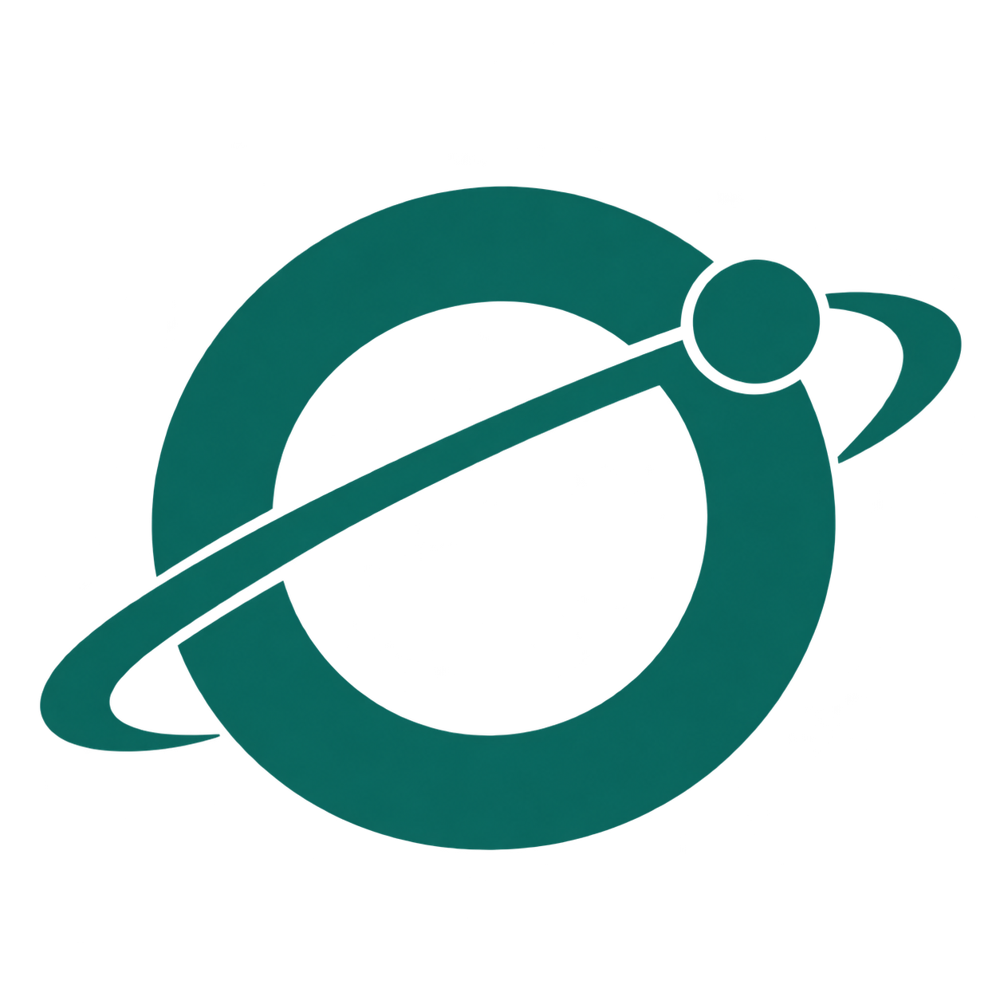
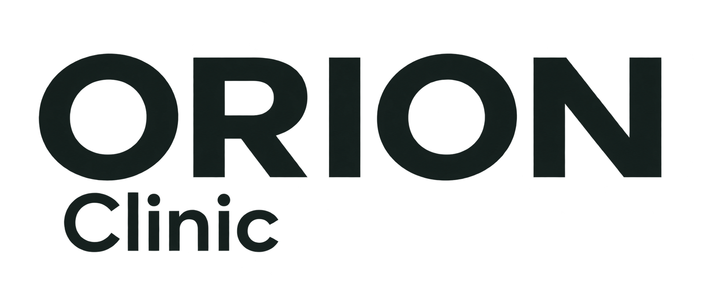

Логотип · светлая тема
Плавный оборот за 14 секунд. Статичная буква O сохраняет читаемость.
Дальняя дуга скрывается за знаком. Ближняя проходит перед ним. Спутник движется по той же орбите.
Плавный оборот за 14 секунд. Статичная буква O сохраняет читаемость.
Мятный знак и светлая надпись — без тёмных букв на тёмном фоне.
Получаем данные…
Здесь показан пример, запрос не выполняется.
Оборот за 3,6 секунды. В платформе появляется только во время настоящего ожидания.


PNG с прозрачным фоном. SVG и интерфейсная версия подготовлены отдельно для чёткости и управления движением.
Уменьшение движения в системных настройках останавливает анимацию автоматически. Логотип остаётся виден. Галерея не содержит данных пациентов и не обращается к медицинским API.